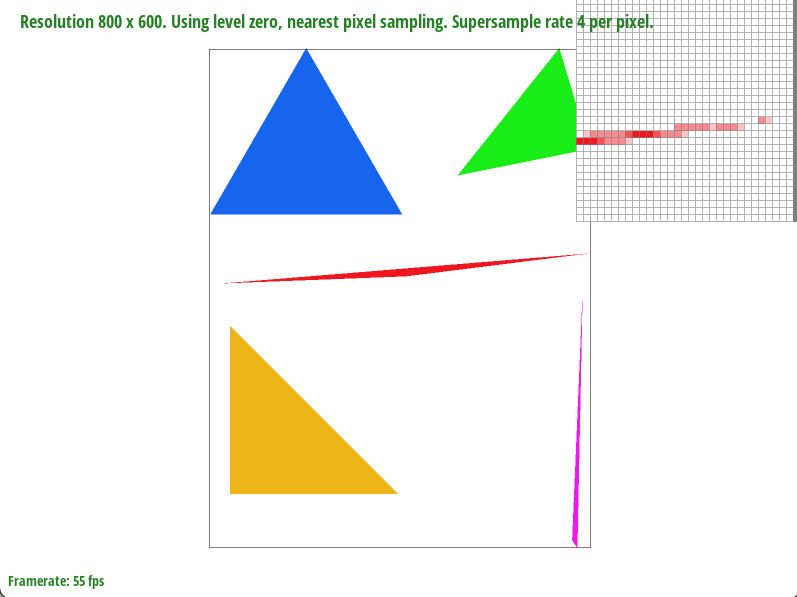
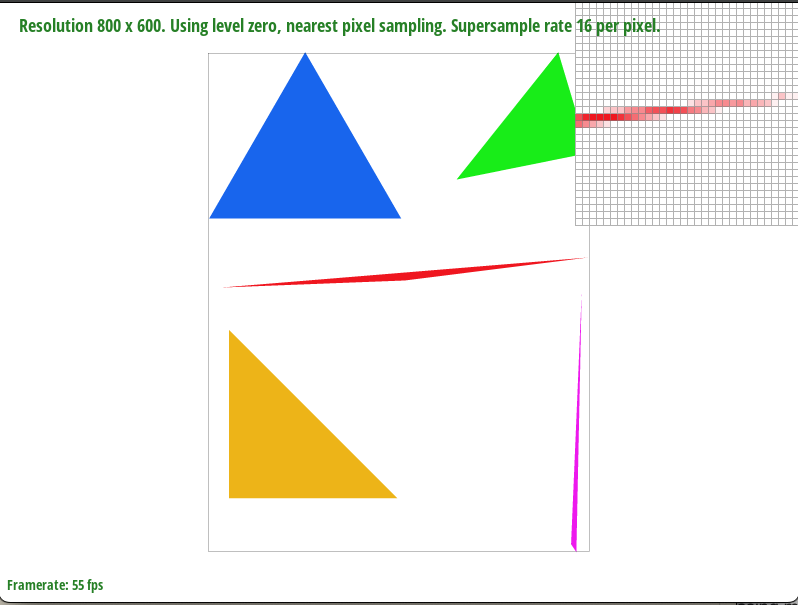
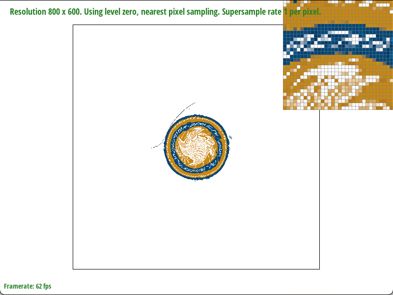
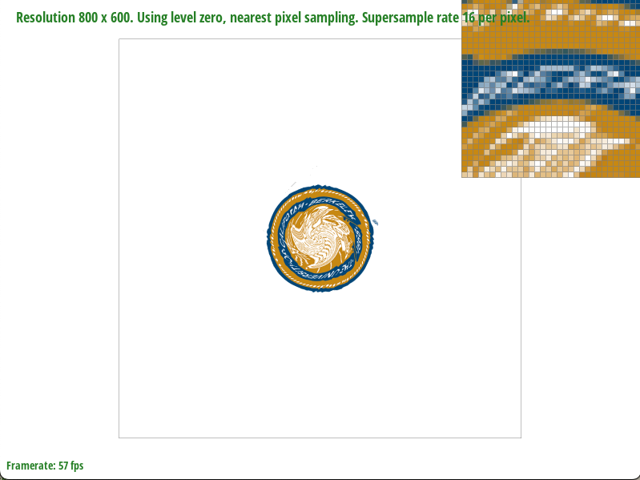
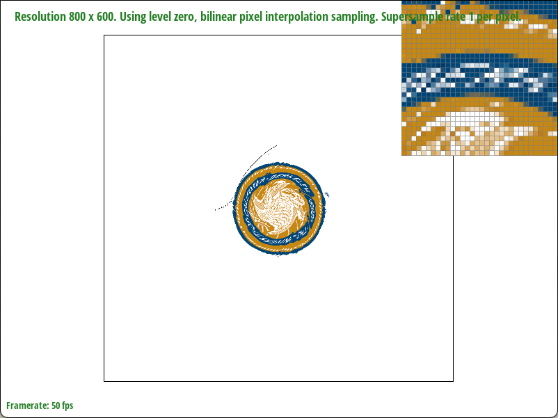
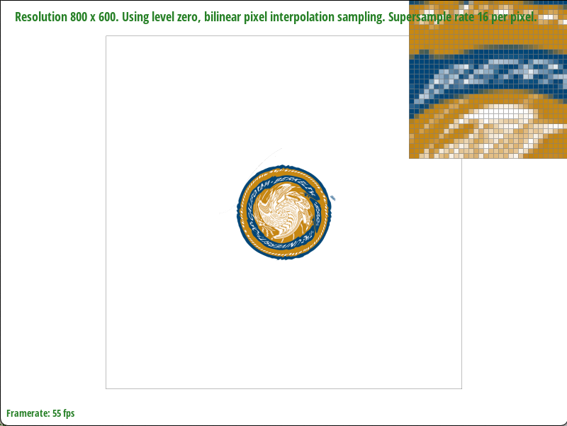
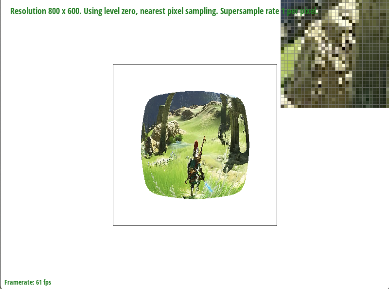
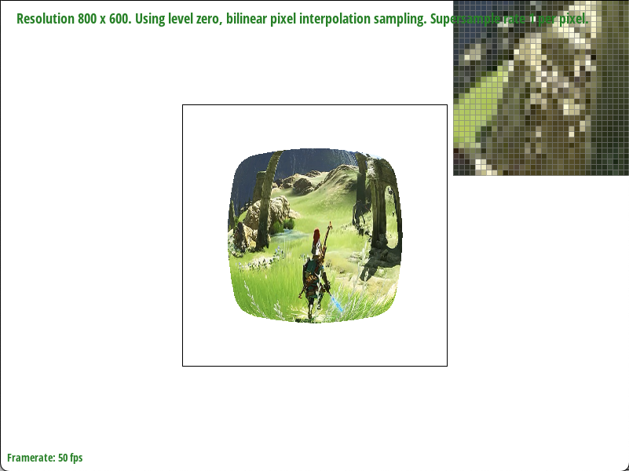
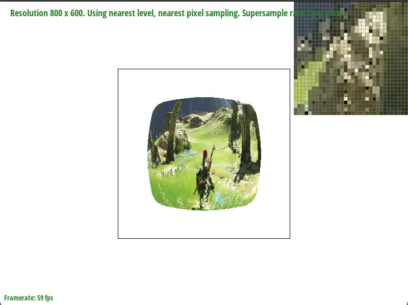
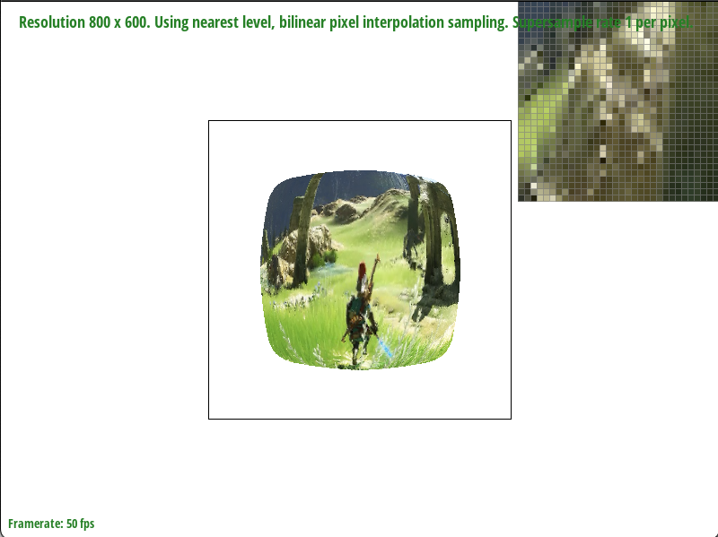

In this homework, I implemented rasterization for single-color triangles; ran the supersampling algorithm to antialias svg images; implemented the translate, scale and rotate transforms; implemented barycentric coordinates; implemented nearest neighbor and bilinear pixel sampling; and finally implemented level sampling with mipmaps.
Thinking about this as a whole, in this assignment, we implemented a great deal of the rasterization pipeline -- functionality with regards to how rendered images look (i.e. get rid of jaggies with antialiasing, both by using supersampling and level sampling with mipmaps). Something very interesting I learned from this homework is how much overlap there exists across each task (which produce different results). For example, you always traverse the bounding box, and generally only care about things inside a triangle. Additionally, barycentric coordinates aren't just for the interpolated triangles -- they also help with uv texture coordinates.
Triangles are rasterized (in my program) one triangle per function call. They are specified by their three vertices, and the goal is to color in the pixels that are within the triangle. To narrow down the search space, you can compute a bounding box for the triangle by taking each of the four combinations of the smallest and largest x and y values. Additionally, because indexing requires integers, we will floor min values and ceiling max values.
My algorithm is no worse than one that checks each sample within the bounding box of the triangle because I iterate through just the bounding box (double for loop), and in each iteration, I check if the the point is inside the triangle.
The statement above hides a bit of complexity. When checking whether a point is inside the triangle, the implementation requires us to be cognizant of the winding/ordering of the triangle vertices (clockwise or counterclockwise, as this will affect the sign of our result). We can check this via calculating the determinant of the matrix where each row is a vertex (padded with a 1). A positive determinant indicates a counterclockwise ordering. The inside function assumes our input is counterclockwise, so we will swap vertices if the winding was clockwise.
Finally, if our point (the center of a grid square) is inside the triangle, just rasterize it!
The main idea behind the way I supersampled was to “upsample” the image (by scaling the size of our sample buffer by our sample rate), then downsampled (averaged values) when actually mapping from sample buffer to the actual RGB buffer.
Now, in every function except the one where we map from sample buffer to RGB buffer, we do our computations as if we are working in “higher resolution,” so I scale both dimensions of everything (including the vertices) by the sqrt(sample_rate), as this is what we use when indexing into our enlarged sample buffer. Besides this change, everything stays the same.
The part that does change is resolve_to_frame_buffer(). You can perform the downsampling by having outer loops which iterate through the larger pixels, then have inner loops which iterate through the “sub-pixels”. This method is chosen so that you can get an averaged color from the supersampling, one pixel at a time, which gets resolved to the RGB buffer.
Supersampling is useful because it allows us to get rid of jaggies (it’s a way to antialias). A way to think about this is, a pixel that would have been white (abruptly from red to white), may now be light red, as some of a pixel’s sub-pixels were within the triangle. This smoother transition/blur helps deal with jaggies.
|
|

|
|
|

|
We notice how at a sample rate of 1 per pixel, there are gaps that exist at the thin edge of the triangle. This is because whether a grid square gets colored in or not is a binary "yes" or "no" based on whether its center is contained within the triangle. As the sample rate increases, the number of sub-pixels increase, allowing for more opportunity for parts of the grid square just outside of the boundary to partially be colored (via the averaging/downsampling operation). This smoothening allows for almost a complete elimination of the gap, as observed in the bottom right image with a sample rate of 16.
This section utilizes transform matrices to achieve the desired transforms! In the image below, I posed the cubeman by rotating and translating his appendages and gave him clothes by changing the triangle colors.
Barycentric coordinates describe a point’s location with respect to a given triangle and its vertices. They are a coordinate system that readily allows for interpretation (each coordinate, alpha, beta, gamma is a weightage towards the direction of each vertex).
Despite our image existing in 2D space (and thus only “needing” 2 coordinates), having three coordinates allows for tweaking in the color interpolation sense. Why is this useful? Well, if we can define each point within a triangle by its barycentric coordinates (weightage towards each vertex), we can also use that to linearly interpolate (weighted sum) the color values at any given point within the triangle, based on the color values of each vertex. An example is shown below. Towards a vertex, we approach one color, while within the triangle, it is a smooth blend of each color.
As a note, there was initially a white line that would appear on the circle; however, it disappears after dragging/translating the circle a bit, and no matter how else I drag it back, the white line stays gone.
To zoom out, the broad problem we would like to address is texture mapping: given a triangle, specified by its vertices’ xy-coordinates as well as the vertices represented in uv-texture-coordinates, how might we accurately apply a texture file’s color (at a specific index) to each point within the triangle itself (in contrast to just rasterizing the points within a triangle with one color, like in task 1)? We would like to use pixel sampling for this issue.
Given uv coordinates (to index into a texture), we want to obtain the color stored at the index of that given texture. However, we need a way to deal with in-between (fractional) indices that gets passed in. The idea is then to use pixel sampling techniques such as nearest neighbors sampling and bilinear sampling, to grab the appropriate color from the texture map for a given uv coordinate.
For nearest neighbors, you just choose the closest integer texel coordinates (via rounding) and use the color at that coordinate for the pixel sampling. For bilinear sampling, the idea is to get a “weightage” of color from each of the 4 surrounding texels — the closer the texel is to the uv coordinate, the more weightage it has (and we will use linear interpolation for this process, just like when we did barycentric coordinates).
The big idea then is, to perform texture mapping, we follow a process similar to rasterization in task 1 (with the bounding box and looking at pixels within the triangle), but instead of filling everything with a single color, we obtain the uv-coordinates via barycentric interpolation of the xy-coordinates and plug that into the workflow defined in the two above paragraphs (with nearest neighbor or bilinear sampling), which will output us a color to use when rasterizing that particular pixel.
|

|

|
|

|

|
In the above diagram, when comparing the nearest neighbor sampling with the bilinear sampling, via the zoom box, we see that bilinear seems smoother, while nearest neighbor is more abrupt with colors. In this case, bilinear's smoothness works towards our advantage when displaying letters. We can see this when looking at the "R" in Berkeley in the sample rate 1 case. Because there is less dramatic of a color change in the edges of the letter, it allows us to better guess the letter -- nearest neighbor's R looks like an N, while the bilinear R resembles an R.
Under the hood, nearest neighbor required less computation than bilinear (rounding vs. using 3 lerps); however, bilinear helps provide a more smooth transition between shapes. The reason why nearest neighbor is more abrupt than bilinear interpolation is because it'll just choose the nearest texel when choosing a color. Meanwhile, bilinear interpolation linearly interpolates the resulting color with a weighted sum, based on how close the original point is to the nearest 4 points. The last thing to note is when looking at the normal image (not the zoomed box) for the images with a sampling rate of 16, the image using bilinear interpolation is a bit clearer (when reading "Berkeley").
Level sampling is relevant when using mipmaps (progressively lower resolutions of the same texture files). Based on how small/large or close/far an object or area is in a photo, choosing the appropriate level of detail of a texture is necessary to make things “look nice.” To elaborate, if you choose something too detailed for a small object, it won’t look like the overall object, as too much detail takes up the space of the little amount of available pixels to rasterize. On the other hand, if you choose something too un-detailed for a large object, it will look very blurry.
In the context of this assignment, the way this fits in is when you’re obtaining a level to look at from the mipmap. First, we use the formula given by lecture to obtain an appropriate level (likely a float value). With nearest neighbor level sampling, you just round that level to an integer and use that as the level you will perform the pixel sampling described in part 5. With bilinear level sampling, you’ll instead compute the color from performing pixel sampling from both surrounding levels, and linearly interpolate the result between those two color results.
It is important to note the difference between the nearest neighbors and bilinear sampling in the context of level sampling vs. pixel sampling. In level sampling, nearest neighbors is used to round the level chosen to be looked at for the mipmap, while bilinear sampling is used to interpolate the colors returned when using the surrounding two levels. Meanwhile, in pixel sampling, nearest neighbors is used to grab the color value of the closest texel, and bilinear sampling is used to linearly interpolate (weighted sum) the color values of the four nearest texels. A level must be passed into the functions for pixel sampling (as this determines which level of the mipmap we look at when interpolating).
We will now discuss the benefits and tradeoffs of each category of level sampling. We have L_ZERO, L_NEAREST, and L_LINEAR, describing just grabbing the 0th level of the mipmap, grabbing the nearest level, and linearly interpolating the results between two levels. L_ZERO is the fastest in that there is no need to calculate the $$(\frac{du}{dx}, \frac{dv}{dx})$$ and $$(\frac{du}{dy}, \frac{dv}{dy})$$ To obtain these quantities, you must calculate the uv barycentric coordinates of (x, y), (x+1, y) and (x, y+1), obtain the difference vectors, and scale them by the width and height of the full-resolution texture image. Now, when comparing
nearest neighbor with bilinear level sampling, nearest neighbor will be faster in that you only need to calculate the result of one pixel sample, while for bilinear level sampling, you must calculate for two different levels, then interpolate them. As expected, the bilinear interpolation approach will allow for smoother transitions. Both approaches where you choose an appropriate level are better than level 0 by the reasoning of the first paragraph in this section.
Now, when deciding between pixel sampling, level sampling, or the number of samples per pixel, note that these will all "smooth"/"blur" an image out. Supersampling increases the computation costs of every operation exponentially (if N is defined as the length of a grid square in sub-pixels). This is just due to there being more buffer spaces to fill now. Level sampling is expensive due to needing to calculate the (du/dx, dv/dx) and (du/dy, dv/dy), which is kind of like adding two more points to look at per original point; however, it allows us to reap the benefits choosing the appropriate mipmap. This is effective, and not as computationally expensive (both in terms of memory and speed) as supersampling. Finally pixel sampling is the least computationally expensive in memory and speed. For memory, this is because we only need to store one copy of a texture (rather than multiple different levels of detail) compared to level sampling. For speed, we only need to have one sample per pixel, and there's no overhead in determining the appropriate level to choose from. In this same order of decreasing cost, the antialiasing power also decreases in that order (with supersampling being the most powerful).
|

|

|
|

|

|